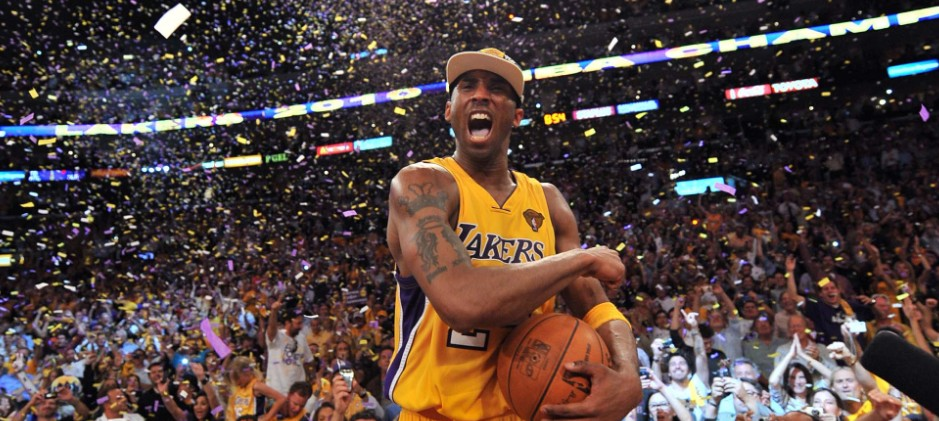

History
Founded in 1947, the Lakers are one of the NBA's most well known and successful teams. The Lakers hold the all-time records for wins (3,125), winning percentage (.620), and NBA Finals appearances (31). The Lakers currently stand in second place to the Celtics in terms of championship victories. Lakers have had some of the greatest talents in NBA history run through their teams across their storied history. Contrary to popular belief, the Lakers weren't always on the west coast under the bright lights of Los Angeles. The franchise was founded in Minneapolis, MN. The name "Lakers" was derived from the state of Minnesota's nickname (Land of 10,000 lakes).
Magic Johnson and Kareem Abdul-Jabbar posing for a picture.

Kobe Bryant celebrating his fifth championship, and the franchises 16th overall.
Photo of George Mikan, Laker great. Mikan is attributed with revolutionizing the center position.
Photo of the 1950 Lakers, winning the franchise their second championship in its third year of existence.
Jerry Buss was vital for the Lakers success, and had built a championship culture before passing on Feb 18, 2013.
Kobe and Shaq were arguably the most dominant duo in NBA history, they won three NBA championships in a row together.
The Lakers have won a total of 16 NBA championships, that's second all-time only to the Boston Celtics.
List of Championship Seasons
1949- Minneapolis Lakers over Washington Capitols 4-2. Series MVP: N/A
1950- Minneapolis Lakers over Syracuse Nationals 4-2. Series MVP: N/A
1952- Minneapolis Lakers over New York Knicks 4-3. Series MVP: N/A
1953- Minneapolis Lakers over New York Knicks 4-1. Series MVP: N/A
1954- Minneapolis Lakers over Syracuse Nationals 4-3. Series MVP: N/A
1972- Los Angeles Lakers over New York Knicks 4-1. Series MVP: Wilt Chamberlain (1x)
1980- Los Angeles Lakers over Philadelphia 76ers 4-2. Series MVP: Magic Johnson (1x)
1982- Los Angeles Lakers over Philadelphia 76ers 4-2. Series MVP: Magic Johnson (2x)
1985- Los Angeles Lakers over Boston Celtics 4-2. Series MVP: Kareem Abdul-Jabbar (2x)
1987- Los Angeles Lakers over Boston Celtics 4-2. Series MVP: Magic Johnson (3x)
1988- Los Angeles Lakers over Detroit Pistons 4-3. Series MVP: James Worthy (1x)
2000- Los Angeles Lakers over Indiana Pacers 4-2. Series MVP: Shaquille O'Neal (1x)
2001- Los Angeles Lakers over Philadelphia 76ers 4-1. Series MVP: Shaquille O'Neal (2x)
2002- Los Angeles Lakers over New Jersey Nets 4-0. Series MVP: Shaquille O'Neal (3x)
2009- Los Angeles Lakers over Orlando Magic 4-1. Series MVP: Kobe Bryant (1x)
2010- Los Angeles Lakers over Boston Celtics 4-3. Series MVP: Kobe Bryant (2x)
Laker Greats Ranked (Personal Opinion)
#1: Kobe Bryant: 5x Champion, 2x Finals MVP, All-time leading Laker scorer. Played Entire 20 year career with the Lakers.
#2: Magic Johnson: 5x Champion, Lakers' All-time leading assists record holder. averaged 11.8 Assists with the team.
#3: Kareem Abdul-Jabbar: 6x Champion, NBA all-time leading scorer. Helped Lakers secure 5 NBA championships alongside Magic Johnson.
#4: Wilt Chamberlain: 2x NBA Champion, scored 100 points in a single game (NBA Record). Standing 7'2", he was a freak of nature.
#5: Jerry West: 1x NBA Champion. Jerry West is literally the logo of the NBA, what more is there to say?
#6: Shaquille O'Neal: 4x NBA Champion. Weighing nearly 400 pounds in his prime, he is often regarded as the most dominant NBA player in history.
#7: James Worthy: 3x NBA Champion. Although on a team with both Magic and Kareem, Big Game James was no pushover. He was a defensive monster an won an NBA Finals MVP despite playing with 2 legends.
#8: Elgin Baylor: 0x NBA Champion. Although he never won the big championship, he was still an offensive nightmare. Playing alongside Jerry West, he scored 72 points in a single game (3rd all time).
#9: George Mikan: 7x NBL, BAA, and NBA Champion. George Mikan is one of the most revolutionary players in NBA history. He was a pioneer of using his height advantage and taking the ball to the rim, not shooting.
#10: LeBron James: 3x NBA Champion. Although he has only played one season for the Lakers at the time of writing, you can't deny his greatness as he pursues his 4th championship, and the Lakers 17th.